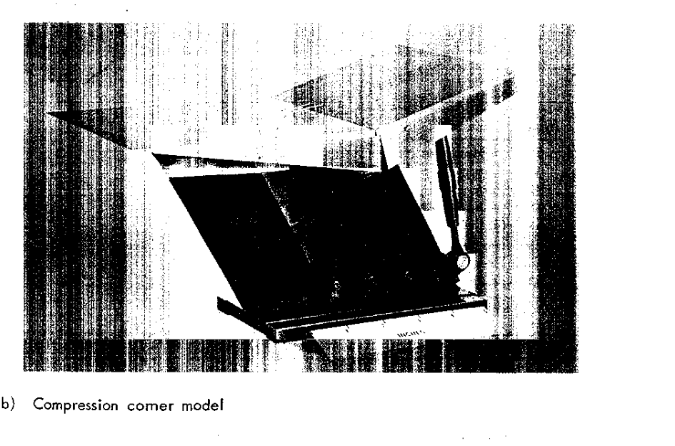
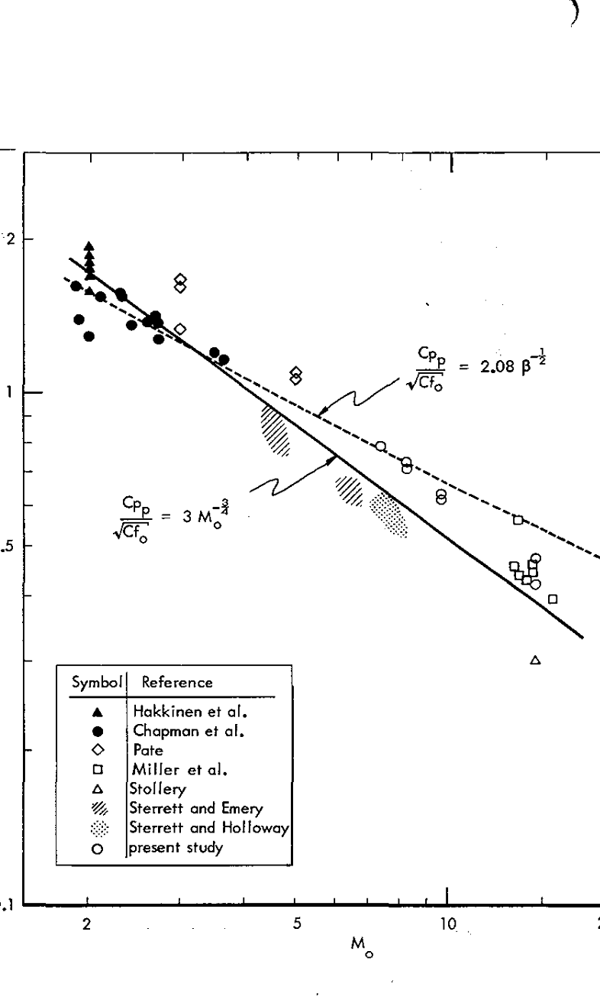
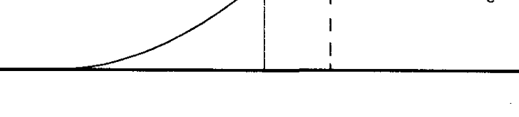
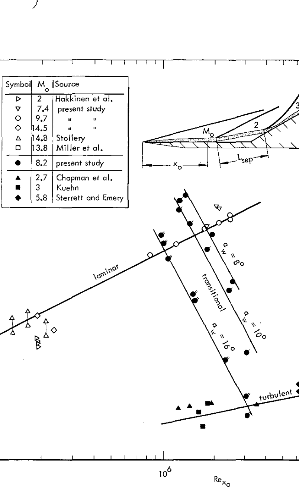

01中文摘要
回顾超声速与高超声速层流分离实验，并给出帝国理工学院高超声速炮风洞的新结果。试验包括压缩拐角和入射激波两类构型，马赫数7.4～15。结果支持Chapman自由干扰概念，并将充分分离流的平台压力在M=2～16范围经验关联。确认起始分离概念，但指出其与平台压力之间没有简单联系；随马赫数增大平台压力与分离压力系数下降，而起初分离压力系数显著上升。建议用再附点下游压升而非分离点上游压升定义起始分离。楔形压缩拐角的起始分离数据可用高超声速小扰动相似参数和粘性干扰参数关联；转捩位置会强烈改变分离长度，造成随雷诺数相反的趋势。
02阅读说明
实验 + 数据关联（综述性）类论文：AIAA Paper 66-455，Needham & Stollery，Imperial College，1966，20 页扫描件。材料为 OCR 全文、7 项抓图清单与图注；OCR 质量差（字符粘连、公式错位），关键公式已回读 PDF 第 6–11 页核对，其余图表数值受限于扫描清晰度。正文完整，Fig.1–12、Table I–II 均在材料中出现（Fig.3–12 的部分吹风数据读出困难）。本记录页码统一按 PDF 页序（与图件清单一致），与原刊印刷页码不同；引文短句已按 OCR 校正明显错字。 文章类型：期刊
03一句话核心与三句话摘要
高超声速平板分离：自由干扰与高原压力可关联至 M=16，但起始分离须看再附点，Cp_i 随 M 显著增大。
- 已有高超声速分离数据零散，层流分离的起始条件与分离尺度缺乏统一关联，且转捩位置的影响未被识别，导致部分相互矛盾的结论。 原文明确
- 用 Imperial College 高超声速炮风洞（M=7.4、8.2、9.7、15，冷壁平板 + 压缩拐角/入射激波，p0≤2000 psia、T0≤1300 K）测量压力与纹影，并汇总文献数据重做无量纲关联。 AI概括
- Chapman 自由干扰原理在高超声速成立，高原压力可经验关联为 Cp_p=3C_f0^(1/2)M0^(-1/2)（2<M<16），但起始分离与 Cp_p 无简单关系，Cp_i 随 M 显著增大；分离长度与起始条件强依赖转捩位置。 原文明确
04核心内容清单
| 要点 | 类型 | 重要性 | 原文依据 | 属性 |
|---|---|---|---|---|
| Chapman 自由干扰原理在高超声速（M=7.4、9.7、15）分离流中成立，压缩拐角与入射激波两种分离的壁面压力分布形状相似。 | 核心结论 | A | p.11，Fig.5；p.2 摘要；p.19 结论 | 原文明确 |
| 充分发展分离流的高原压力在 2<M<16 可经验关联为 Cp_p=3C_f0^(1/2)M0^(-1/2)（式5）。 | 核心关联 | A | p.11，式(5)、Fig.4 | 原文明确 |
| 自由干扰原理与高原压力值都不能用来确定起始分离条件。 | 结论 | A | p.19 结论；p.15–16 | 原文明确 |
| 分离点位置由再附过程决定：分离点向上游移动直到分界流线外流体有足够动能穿过再附压升，同时满足回流与质量吞噬平衡。 | 机理 | A | p.13 | 原文明确 |
| 分离长度对转捩位置极其敏感；层流 L_sep 随 Re 增大，湍流也增大但较弱，过渡数据介于两者之间。 | 核心结论 | A | p.13–14，Fig.7；p.19 | 原文明确 |
| Cp_i 与 Cp_p 无简单关系：M 增大时 Cp_s、Cp_p 下降而 Cp_i 显著上升，且 Cp_i≫Cp_s、Cp_i≈Cp_R。 | 核心结论 | A | p.15–16，Fig.8 | 原文明确 |
| Hakkinen 等提出的 Cp_i=2Cp_s 关系在高超声速不成立，Erdos-Pallone 的 Cp_i=Cp_p 假设被证明错误。 | 对既有理论的修正 | A | p.15–16；p.2 摘要 | 原文明确 |
| 高超声速下边界层内压缩小波在到达外缘前合并为激波，dp/dy=0 失效，故式(2) 失效、高原压力出现更强 M 依赖。 | 机理 | B | p.7，Fig.6 | 原文明确 |
| 起始分离可用高超声速小扰动相似参数 M∞α_i 与黏性干扰参数 χ̄ 关联；层流与湍流数据在 α_i–Re 图上分成两条线。 | 关联方法 | A | p.17–18，Fig.10、Fig.11；p.19 结论 | 原文明确 |
| 转捩可使起始分离出现两种相反趋势：转捩在拐角下游使 Cp_i 降低，转捩移到上游后 Cp_i 升高。 | 机理 | A | p.17–18，Fig.11、Fig.12 | 原文明确 |
| 炮风洞分离流建立时间约 600 μs，5 ms 量级运行时间的激波风洞即可用于分离研究，但测量须在同一时刻进行且仪器响应足够快。 | 实验方法学结论 | B | p.5 | 原文明确 |
| 壁冷推迟分离起始但效应很小；壁温比是填补“超声速绝热壁”与“高超声速冷壁”数据空白的最重要待研究参数。 | 研究空白 | B | p.17；p.19 结论 | 原文明确 |
05引言：研究问题与领域缺口
问题与缺口（p.3–4）：高超声速飞行器以层流为主，分离会显著改变气动与控制面特性；当时高超声速分离数据很少，主要来自短时设备。已有工作包括 Chapman、Kuehn & Larson 在 M=0.4–1.6 的经典自由干扰研究（认为最关键参数是转捩位置相对分离点的位置）、Wood 的 M=7/10 尖锥、Michel 的 M=7/12 卵形体-柱-裙、Bogdonoff & Vas 关于前缘黏性干扰对后续分离流的影响、Miller 等 M=8–22 控制面分离、Patel 与 Putnam 的可变展长襟翼、Gray 与 Sterrett & Holloway 的轴对称/平板数据。缺口有三：① 高超声速（M>7）层流分离的系统数据少；② 起始分离（incipient separation）自 Kuehn 与 Hakkinen 后很少研究，且 Gray 因观察到 L_sep 随 Re 减小而否定起始分离概念，与 Kuehn 矛盾；③ 壁温比 Tw/T0 的影响几乎未被研究，现有数据分裂为“超声速-绝热壁”与“高超声速-冷壁”两类。目标（p.2 摘要、p.4）：给出 Imperial College 三年炮风洞分离实验的结果，并对现有实验数据做最新关联，澄清自由干扰、高原压力、起始分离与转捩的作用。
06流动条件与几何构型
| 项目 | 数值/描述 | 依据 | 备注 |
|---|---|---|---|
| 试验设备 | Imperial College Hypersonic Gun Tunnel（自由活塞压缩加热器 + 型面喷管，间歇式）；p0≤2000 psia，T0≤1300 K，空气；开放式射流，喷口直径 8 in，有效核心 5 in；有效运行时间 30 ms | p.4 | 设备细节与标定见文献[20,21] |
| 名义 Mach 数 | 均匀流 M=7.4、8.2；锥形流 M=7.4、9.7、15 | p.4 | 局部 M=7.4 通过把模型倾斜置于 M=8.2 型面喷管中获得 |
| 单位雷诺数 | 1.5×10^5–5×10^5 per inch（最大至 M=9.7） | p.4 | 原文以 per inch 给出，未换算为每米 |
| 压缩拐角模型 | 5 in 展长、6 in 弦长平板，前缘厚度 0.001 in；全展 4 in 弦长尾缘襟翼 | p.4，Fig.1 | 二维，无侧板 |
| 入射激波模型 | 5 in 展长、8 in 弦长平板；上方可变迎角楔产生入射激波 | p.4，Fig.1 | 同一平板用于压缩拐角与入射激波两类分离对比 |
| 测压孔布置 | 轴向间距 0.1 in，错列于中部 10% 展长；另设展向测压孔检查二维性 | p.4 | 试验未加侧板 |
| 壁温条件 | 冷壁（属 hypersonic-cold wall 数据类）；具体 Tw 值与 Tw/T0 文中未给出 | p.4；p.19 | 加热模型绝热壁试验正在进行；Table I 中 Tw 列 OCR 不可读 |
| 边界层状态 | 以层流为主，必要时纳入过渡与湍流数据对比 | p.3；p.10 | 过渡数据仅在纹影显示转捩紧邻再附点时采用 |
| 测量时间窗口 | 起动后 21–37 ms | p.5 | 皮托压力平台期为基准 |
| 流场建立时间 | 约 600 μs（3 帧）内建立，随后 2 ms 不变；20 ms 内 L_sep 增长约 5% | p.5 | 高速纹影电影 4500 帧/s，1 ms 标记 |
| 测量不确定度 | 纹影电影量 L_sep 精度约 5%；L_sep 波动引起的误差在 M=9.7 压力测量精度 ±8% 以内 | p.5 | 压力传感器与薄膜热流计的具体精度文中未给 |
| Fig.5 对比工况 | M=7.4、Re_x=1.65×10^6（压缩拐角与入射激波）；M=9.7（拐角） | p.17，Fig.5 | 图注数值来自图内标注 |
| Fig.9 构型 | M=15、Re_L=1.25×10^6 的起始分离流态示意 | p.19，Fig.9 图注 | 对应锥形流 M=15 工况 |
07核心现象与关键参数
| 参数 | 定义 | 数值 | 关系/说明 | 依据 |
|---|---|---|---|---|
| Cp_p（高原压力系数） | 充分发展分离流平台段压力系数，nomenclature 定义为 (p−p∞)/(½γp∞M∞²)；另记 Cp_R=(p_R−p∞)/(½γp∞M∞²) | M=2–16 经验关联 Cp_p=3C_f0^(1/2)M0^(-1/2)；M 增大时下降 | 式(5)，由 Fig.4 数据拟合 | p.2 符号表；p.11，式(5) |
| Cp_s（分离点压力系数） | 分离点处压力系数 | 随 M 增大而下降；与 Cp_i 无简单关系 | 低超声速下 Cp_i≈2Cp_s，M 增大后不再成立 | p.9，式(1)；p.15–16 |
| Cp_i（起始分离压力系数） | 不引起分离所能施加的最大总体压升对应的压力系数 | 随 M 增大显著上升；远大于 Cp_p；约等于 Cp_R | Cp_i ≈ Cp_R 为 R→S 极限（p.16） | p.15–16，Fig.8 |
| L_sep（分离长度） | 分离区长度，常以 L_sep/x_0 无量纲化，x_0 为分离点位置 | 层流随 Re_x0 增大；湍流亦增大但较弱；过渡介于两者之间 | 式(6) 经验关联；Fig.7 | p.13–14，式(6)、Fig.7 |
| M∞α_i | 高超声速小扰动相似参数（M∞ 与起始分离角 α_i 的乘积） | 与 χ̄ 呈幂律关系（Fig.10）；层流/湍流数据在 Fig.11 落成两条线 | M∞α_i ~ χ̄^z（指数 z 在扫描件中不清） | p.17–18，Fig.10、Fig.11；p.19 结论 |
| χ̄（黏性相互作用参数） | 高超声速黏性干扰参数（nomenclature 给出名称，未给出显式定义） | 文中作为关联自变量，具体数值由各文献工况计算 | 与 M∞α_i、Tw/T0 一同构成起始分离的相似参数组 | p.2 符号表；p.17 |
| T*（参考温度） | Chapman-Rubesin 常数 C* 的取值参考温度 | T*=T_w/2+T_0/6 | 式(4)，取自 Cheng 等 | p.10，式(4) |
| C_f0（上游平板摩阻系数） | 自由干扰起始处的层流平板摩阻系数，用于归一 Cp_p | 由 Hayes-Probstien 弱干扰式（式3）在 T* 下计算 | Cp_p/C_f0^(1/2) 对 M 作图得 Fig.4 | p.10，式(3) |
| Re_x0 / Re_x | 以分离点或当地位置为参考长度的雷诺数 | 实验覆盖 10^5–10^7 量级（Fig.7、Fig.11 横坐标） | L_sep/x_0 与 α_i 关联的横坐标 | p.14，Fig.7；p.18，Fig.11 |
| Tw/T0（壁温比） | 壁温与储气总温之比 | 本文为冷壁但未给出数值；文献数据在 Table I 中，OCR 不可读 | 被列为起始分离关联的潜在参数，影响尚未定量 | p.17；p.19 |
08方法与数据
设备（p.4）：Imperial College 高超声速炮风洞，自由活塞压缩加热器驱动型面喷管，间歇运行；p0≤2000 psia，T0≤1300 K，试验气体为空气；开放式射流试验段直径 8 in，有效核心 5 in，有效运行时间 30 ms。模型（p.4，Fig.1）：① 5 in 展长、6 in 弦长平板，前缘厚度 0.001 in，全展 4 in 弦长尾缘襟翼构成压缩拐角；② 5 in 展长、8 in 弦长平板，上方安装可变迎角楔产生入射激波。测压孔间距 0.1 in，错列布置于中部 10% 展长，另设展向测压孔检查二维性，试验不加侧板。名义 Mach 数：均匀流 7.4、8.2；锥形流 7.4、9.7、15；局部 M=7.4 由模型在 M=8.2 型面喷管中偏转获得。测量：应变式压力传感器与铂薄膜热阻计（热流数据见 Holden），压力与热流测量覆盖至 M=9.7、Re=1.5×10^5–5×10^5 per inch；流场以阴影/纹影及彩色纹影观察。非定常性检查（p.4–5）：用约 4500 帧/s 的高速纹影电影（700 帧覆盖 64 ms，1 ms 时间标记）记录 M=9.7 压缩拐角模型，逐 1 ms 量 L_sep，与皮托压力对比；所有测量与纹影取在 21–37 ms 窗口。数据处理（p.10）：仅取有明显压力平台的数据；C_f0 由 Hayes & Probstein 弱干扰式（式3）计算，参考温度用 Cheng 等的 T*=T_w/2+T_0/6（式4）。关联方法：把 Cp_p/C_f0^(1/2) 对 M 作双对数图（Fig.4），L_sep/x_0 对 Re_x0（Fig.7），M∞α_i 对 χ̄（Fig.10），α_i 相关参数对 Re（Fig.11）。
| 项目 | 内容 | 依据 | 备注 |
|---|---|---|---|
| 风洞与来流品质 | 自由活塞加热器驱动型面喷管，空气，p0≤2000 psia、T0≤1300 K，有效运行 30 ms；来流噪声/湍流度文中未提及 | p.4 | 非定常性由皮托压力与高速纹影监控 |
| 模型与安装 | 5 in×6 in 与 5 in×8 in 平板；压缩拐角襟翼与入射激波楔；无侧板；测压孔 0.1 in 间距，中部 10% 展长错列 | p.4，Fig.1 | 展向测压孔用于检查二维性 |
| 表面压力测量 | 应变式压力传感器（strain-gauge transducers） | p.4 | 采样率、量程与不确定度文中未提及 |
| 热流测量 | 铂薄膜电阻温度计（platinum thin film resistance thermometers）；热流结果见 Holden 的前文 | p.4 | 本文未展开热流数据 |
| 流场显示 | 阴影、纹影、彩色纹影；M=9.7 拐角模型用约 4500 帧/s 高速纹影电影（700 帧/64 ms） | p.4–5 | 分离点由纹影判读，精度有限（作者称精确定位困难） |
| 数据筛选 | 只选有明显压力平台的工况；过渡数据仅在纹影显示转捩紧邻再附点时纳入 | p.10 | 以避免把转捩效应误判为层流自由干扰 |
| 摩阻与参考温度处理 | C_f0 用弱干扰式(3)计算，C* 取 T*；T* 用 Cheng 等简化式(4) | p.10 | 高超声速数据按切楔近似与实测平板压力修正到局部条件 |
| 关联与验证方式 | 双对数图拟合：Cp_p/C_f0^(1/2)~M（Fig.4）、L_sep/x_0~Re_x0（Fig.7）、M∞α_i~χ̄（Fig.10）、α_i 参数~Re（Fig.11）；与本实验及文献数据对照 | p.11–18 | 属经验/半经验关联，无 CFD 或理论解验证 |
09核心推导与公式
原文没有封闭解析推导，而是“物理图像 + 量纲分析 + 经验拟合”的推导链：先用自由干扰的双层平衡假设给出压力上升的幂律形式（式1、2），再用弱干扰摩阻与参考温度把数据归一（式3、4），最后由本实验与文献数据拟合出高原压力（式5）、分离长度（式6）与起始分离（图10–11）的关联式。
关键假设
- 二维定常、无侧板平板边界层，以层流为主（p.4）
- 自由干扰区内的局部流态只取决于相互作用起始处的上游边界层条件，与下游分离诱因无关（Chapman 等，p.5、p.10）
- 边界层内压力变化在约一个边界层厚度的流向距离内完成，可沿用 dp/dy=0；壁面压力可由线性化超声速理论与亚层/位移厚度增长率联系（p.7）
- 上游摩阻可用弱干扰相似解与参考温度法估算（式3、4，p.10）
- 冷壁、高超声速、M=2–16 的数据可归入同一经验框架（p.4、p.11）
- 高超声速下 dp/dy=0 与式(2) 失效，需用更强的 M 依赖（式5）替代（p.7）
推导过程
把自由干扰区处理为“黏性-压力诱导边界层增厚”与“外部无粘压缩”的平衡；已有理论（Gadd、Chapman、Hakkinen、Erdos-Pallone、Lees-Reeves）多只给出到分离点或平台的简单幂律表达式。
已有分析给出分离点压升与上游摩阻的幂律：Cp_s=k1(M0²−1)^(−1/4)，同式还给出 C_f0 关于 (M0²−1) 与 Re_x0 的幂律；平台压力写成 Cp_p=k3(M0²−1)^(−1/4)C_f0^(1/2)=k4(M0²−1)^(−1/2)Re_x0 的幂次形式（式2）。
为把不同来源数据归一到同一基准，C_f0 用 Hayes-Probstien 弱干扰表达式（式3）计算，其中 C* 在参考温度 T* 下取值；T* 采用 Cheng 等的简化式（式4）。
把 Cp_p/C_f0^(1/2) 对 M 作双对数图（Fig.4），在 2<M<16 内得到式(5)：Cp_p=3C_f0^(1/2)M_0^(−1/2)。与式(2)（k3=2.08）比较可见后者在高超声速高估 Cp_p，说明指数应由 −1/4 类弱化为更强的 M 依赖。
以“再附过程决定分离点”为前提，将 L_sep/x_0 与平台压比 (p_p/p_1) 及 Re_x0 关联（式6），并在 Fig.7 上对层流、过渡、湍流三类数据检验；过渡数据散布归因于转捩位置随 Tw/T∞ 与 Re_x0 同时移动。
把高超声速起始分离视为细长体上的黏性干扰问题，对壁面应用边界层动量方程 dp/dx=(∂τ/∂y)_w 作量纲分析，得出 M∞、χ̄、Tw/T0 为相关参数；将数据画成 M∞α_i 对 χ̄（Fig.10），作者自称只能给出“很初步”的幂律 M∞α_i~χ̄^z；再选 α_i 相关参数对 Re 作图（Fig.11），层流与湍流落成两条线。
适用边界：均为经验/半经验拟合：系数（3、2.08 等）由有限数据拟合，无误差带；式(1)(2)(6) 的部分指数在材料中不可读；自由干扰幂律基于 dp/dy=0 与线性化超声速理论，作者自己指出该假设在高超声速失效因而必须改用式(5)；数据分裂为“超声速绝热壁”与“高超声速冷壁”，壁温效应未知；转捩无法独立控制，过渡数据散布大；起始分离关联被作者称为“很初步”。
10结果：主要发现与关键证据
① 流动建立（p.5）：起动后 3 帧（约 600 μs）内分离几何即建立，随后 2 ms 不变；在皮托压力平台期 L_sep 20 ms 内仅增长约 5%，28–33 ms 有约 ±5% 振荡；t=51 ms 再反射激波到达引起 L_sep 跳变；由此判断 5 ms 量级运行时间的激波风洞亦可用于分离研究。② 压力分布（p.5–6，Fig.3）：分离点对应压力分布第一个拐点，随后梯度减小并出现平台，再附前压力陡升、峰值位于再附点下游，再由分离/再附激波相交产生的反射波系把压力调回楔面值。③ 自由干扰（p.11，Fig.5）：压缩拐角与入射激波两种分离的压力分布形状相似，M 从低超声速升到高超声速仍保持相似，支持 Chapman 自由干扰原理。④ 高原压力（p.11，Fig.4）：2<M<16 范围内经验关联 Cp_p=3C_f0^(1/2)M_0^(-1/2)（式5）；Erdos-Pallone 式(2) 取 k3=2.08 在高超声速明显高估。⑤ 起始分离（p.15–18）：Cp_i 与 Cp_p 无简单关系，Cp_i≫Cp_s 且 Cp_i≈Cp_R；M 增大时 Cp_s、Cp_p 下降而 Cp_i 显著上升（Fig.8）。⑥ 分离长度（p.13–14，Fig.7）：层流 L_sep 随 Re_x0 增大，湍流亦增大但依赖较弱，过渡数据散落在两条曲线之间，M=8.2 过渡数据呈相反趋势。⑦ 起始分离关联（p.17–18，Fig.10–12）：可用 M∞α_i 与黏性干扰参数 χ̄ 关联，层流与湍流数据在 Fig.11 分成两条线；Gray 的 M=4 过渡结果落在分离与不分离两个 Re 之间，说明其“异常”源于转捩。
| 发现 | 证据 | 证据类型 | 强度 | 位置 | 属性 |
|---|---|---|---|---|---|
| 自由干扰原理在高超声速分离流中成立，压缩拐角与入射激波诱导的分离压力分布形状相似。 | Fig.5 中 M=7.4/9.7 两类分离的 p/p_f 分布形状一致；M 从低超声速到高超声速保持相似 | 实验（压力分布） | 强 | p.11，Fig.5；p.2 摘要 | 原文明确 |
| 高原压力可在 M=2–16 内关联为 Cp_p=3C_f0^(1/2)M0^(−1/2)，而 Erdos-Pallone 式(2) 在高超声速高估。 | Fig.4 双对数图上各来源数据（含本文与文献[9]修正到局部条件的数据）落在同一趋势带；式(2) k3=2.08 曲线偏高 | 实验+经验拟合 | 强 | p.11，式(5)、Fig.4 | 原文明确 |
| 自由干扰原理与高原压力值均不能用于判定起始分离。 | 起始分离对应的压升远高于高原压力；Fig.8 显示 Cp_i 随 M 上升而 Cp_p 下降 | 论证 | 强 | p.15–16，Fig.8；p.19 结论 | 原文明确 |
| Cp_i 与 Cp_p 无简单关系，Cp_i≫Cp_s 且 Cp_i≈Cp_R；Hakkinen 的 Cp_i=2Cp_s 与 Erdos-Pallone 的 Cp_i=Cp_p 均不成立。 | 高 M 下入射/反射激波压升高度不对称，大部分压升发生在再附点下游；Cp_i 应取 R→S 极限 | 理论论证+数据 | 强 | p.15–16 | 原文明确 |
| 层流分离长度随 Re 增大而增大；湍流亦增大但较弱；过渡数据介于两者之间并随测试条件散布。 | Fig.7 中 L_sep/x_0–Re_x0 三条分支；本文 M=10 与文献[9,29]观察一致 | 实验关联 | 中 | p.13–14，Fig.7 | 原文明确 |
| 转捩位置可使起始分离出现相反趋势：转捩在拐角下游使 Cp_i 降低，转到上游后 Cp_i 升高。 | Fig.11 中 M=8.2 过渡数据与层流线趋势相反；Fig.12 Gray 的 M=4 结果落在分离/不分离两 Re 之间 | 实验关联 | 中 | p.17–18，Fig.11、Fig.12 | 原文明确 |
| 高超声速起始分离可用 M∞α_i 与 χ̄ 关联，数据给出很初步的幂律关系。 | Fig.10 中 M=7.4–15 的起始分离数据在 M∞α_i–χ̄ 图上成带 | 经验关联 | 弱 | p.17，Fig.10 | 原文明确 |
| 壁冷推迟分离起始，但效应很小。 | 加热模型试验的初步结果；Gadd 的理论预测（冷却时分离点位置不变、分离处压力梯度增大）被部分证实 | 实验（初步）+理论 | 弱 | p.17；p.6 | 原文明确 |
| 炮风洞中分离流建立时间约 600 μs，5 ms 量级运行时间的激波风洞即可开展分离研究。 | 高速纹影电影显示起动后 3 帧内分离几何建立，随后 2 ms 不变；L_sep 响应快于皮托压力探头 | 实验（流场显示） | 强 | p.5 | 原文明确 |
11机制解释与论证链
原文论证链（p.5–8, 13–18）：前提一，分离泡的尺度由再附过程而非分离过程决定；前提二，再附要求分界流线外侧的流体携带足够动能穿过再附压升，同时回流质量与被混合带走的 mass 平衡。证据：压力分布在再附前陡升、峰值位于再附点下游（Fig.3）；分离点随下游压力场自由移动（自由干扰）；L_sep 随 Re 增大而增大，但转捩进入剪切层后反而缩短（Fig.7）。推论：L_sep 与起始分离角对转捩位置高度敏感，历史上 Gray 的“L_sep 随 Re 减小”异常与 Erdos-Pallone 的 Cp_i=Cp_p 假设都源于忽略再附区转捩与压力分布不对称。高超声速的特有机制：马赫角减小使亚层增厚产生的压缩扰动在边界层内沿马赫线传播、在到达外缘前合并成激波，壁面压力与外部无粘流脱钩，dp/dy=0 不再成立，故高原压力关联必须采用更强的 M 依赖（式5）。结论：工程上应同时关联“发生”（Cp_i，用 M∞α_i 与 χ̄）与“尺度”（L_sep，用压比与 Re_x0），并明确边界层状态。
12讨论：结论、贡献与局限
机制（p.5–8, 13）：分离点位置不是由上游压力梯度单独决定，而是由再附过程决定——分离点向上游移动，直到分界流线外侧被自由剪切层加速的流体获得足够动能穿过再附压升；分界流线下方的回流与气泡被混合过程带走的 mass 必须同时平衡；因此 L_sep 对转捩位置极敏感：转捩使剪切层内慢流体再获能，可在更短距离内满足再附要求。高超声速下流态改变（p.7）：M 增大使马赫角减小、外层偏转滞后于亚层，压缩小波在到达边界层外缘前合并成一道激波，壁面压力不再能简单由外部无粘流线性化理论联系，dp/dy=0 假设失效，故式(2) 在高超声速不适用、出现更强的 M 依赖（式5）。起始分离的判据（p.15–16）：应关注再附点下游的压升而非分离点压升；Erdos-Pallone 假定“压升超过高原压力即分离”与证据相悖；把 Cp_i 视为 R→S（分离点与再附点合并）的极限，理论上 Cp_i 应趋于 Cp_R，故 Cp_i 与 Cp_p 无简单联系。转捩的双重作用（p.17–18）：Re 增大时若转捩先出现在拐角下游，局部压升变陡会使分离提前（Cp_i 降低）；一旦转捩移到拐角上游，边界层被再获能，可承受更陡梯度（Cp_i 升高），这解释了 M=8.2 过渡数据与层流趋势相反。
作者结论
作者结论（p.19）：① 对超声速与高超声速层流分离实验作了评述；Chapman 的自由干扰原理对入射激波与压缩拐角诱导的高超声速分离同样成立，充分发展分离的高原压力已在 M=2–16 内经验关联，但两者都不能用于确定起始分离。② 分离长度关键取决于转捩相对再附区的位置：纯层流时随 Re 增大，转捩位于再附区时减小；层流、过渡、湍流三种行为已用数据关联；近期“异常”结果归因于再附区未识别的转捩影响。③ 起始分离概念得到明确支持，对 M 依赖很强：恒定 Re_x0 下 Cp_p 随 M 下降而 Cp_i 上升；高超声速起始分离数据已用高超声速小扰动相似参数 M∞α_i 与黏性干扰参数 χ̄ 关联。④ 转捩对起始分离的影响已澄清，层流与过渡存在两种行为模式。⑤ 最需立即研究的是壁温，以填补超声速绝热壁与高超声速冷壁数据之间的空白；所给 L_sep 与 Cp_i 关联可用于预估控制面偏转引起的分离发生与范围，并建议进一步研究 dp/dy 与曲面压缩面。
主要贡献
- 系统给出 Imperial College 炮风洞 M=7.4/8.2/9.7/15 冷壁平板分离实验，并用高速纹影证明间歇设备可在约 600 μs 内建立稳定分离流。
- 把高原压力关联扩展到 M=2–16（式5），并指出 Erdos-Pallone 关联在高超声速高估。
- 澄清“Cp_i 与 Cp_p 有简单关系”的两类既有说法（Hakkinen、Erdos-Pallone）不成立，提出应以再附点下游压升为关注对象。
- 识别转捩位置是分离长度与起始分离趋势相反（含 Gray 异常）的共同根源，并给出层流/过渡/湍流三分支关联。
局限与未解决问题
作者承认（p.3–4, 17, 19）：现有数据分裂为“超声速绝热壁”与“高超声速冷壁”，壁温效应几乎未被研究；起始分离关联“很初步”，对 Tw 的影响缺乏认识；转捩无法在固定 M 下独立改变 Re 来系统研究；分离点精确定位困难，只能依赖平台压力；理论处理自由干扰时 dp/dy=0 在高超声速失效。AI 识别的局限：二维无侧板平板、冷壁、空气、层流为主；压力测量精度与传感器带宽未给；纳入关联的文献数据经切楔近似修正，引入额外不确定性；无现代 CFD/稳定性分析交叉验证；OCR 造成部分公式与 Table I/II 数值不可用。
13对高速流动与工程的意义
对高超声速飞行器与控制面设计（AI推断，基于 p.15–19）：提供“发生判据”（M∞α_i、χ̄ 关联的 Cp_i）与“尺度预估”（L_sep/x_0 与压比、Re 的关联）两套可直接用于工程初估的关系，并明确高原压力不能当作起始分离判据。对风洞试验：给出间歇式炮风洞/激波风洞研究分离流的时间准则（约 600 μs 建立、5 ms 即可用）与测量同步要求。对转捩研究：指出层流/过渡数据趋势相反，比较不同来源数据时必须报告转捩位置，否则会得出矛盾结论。不能回答：真实飞行 Re 与壁温条件下的定量外推；三维、有限展长、曲面压缩面与激波-边界层强干扰；分离流的非定常性（本文仅证明时均稳定）；热流分布与壁温的定量影响。
14核心图件




15可引用原文素材
| 原文短句 | 可支持的观点 | 位置 | 使用建议 |
|---|---|---|---|
| “the length of separation is very sensitive to the location of transition” | 转捩位置决定分离尺度的核心论点 | p.13 | 讨论分离长度分散性时引用 |
| “there can be no simple connection between Cp_i and Cp_p” | 否定 Cp_i 与高原压力的简单关系 | p.16 | 方法学引用，可与 Erdos-Pallone 的错误假设并列 |
| “neither the principle of free interaction nor the value of the plateau pressure are of use in determining the incipient separation condition” | 自由干扰/高原压力不能用于起始分离判据 | p.19（结论） | 结论段引用，适合作为与早期文献对比的论点 |
| “the fully laminar separated region increases in length as the Reynolds number is increased” | 层流分离长度随 Re 增大的趋势 | p.13–14 | 与 Gray 的相反观察对照引用 |
| “the separation point is determined by the re-attachment process” | 再附控制分离点位置的机理 | p.13 | 机制部分引用 |
| “wall cooling delays the onset of separation, but the effect is small” | 壁冷对起始分离的定性与量级判断 | p.17 | 壁温效应讨论引用，注意是初步结果 |
| “the establishment time of the separated flow is sufficiently short to justify the use of shock tunnels with running times of the order of 5 ms” | 间歇设备可用于分离研究的判据 | p.5 | 风洞试验方法学引用 |
16最终核验
| 核验项 | 结论 |
|---|---|
| 仅基于全文 | 是。仅使用 bundle 的全文、图注与图件清单；式(1)(2)(4)(5)(6) 与关键段落回读 PDF 第 6–11 页核对，未引入外部文献结论。 |
| A 级要点有依据 | 是。A 级要点均可定位到摘要（p.2）、式(5)（p.11）、Fig.4/5/7/8（p.11/16/18/19）与结论（p.19）。 |
| 属性标注 | 是。three_sentence、core_points、findings 均带属性；作者论断与实验数据标“原文明确”，跨页综合与工程含义标“AI概括/推断”。 |
| 覆盖范围 | 20 页全文、Fig.1–12、Table I–II 均覆盖；Table I/II 与 Fig.8–10 的数值因 OCR/扫描质量无法可靠读取，已在 read_note 与 open_questions 中说明；4 张核心图入选。 |
| 无编造 | 未编造页码、图号、公式或数据。不确定处：式(1) Re 指数、式(2) Re 项、式(6) 的 Re 幂次、式(10) 幂指数 z 均按“扫描不清”处理，未强行给出数值；引用页码为 PDF 页序，已在 read_note 声明与原刊印刷页码不同。 |
需回原文确认
- 式(1) 中 C_f0 的完整幂律与式(2) 中 Re_x0 的指数需用清晰原版核对。
- 式(6) 中 Re_x0 的幂次与平台压比指数（2/3）是否为完整形式，Fig.7 的拟合系数 k 值文中未给。
- Fig.11 纵坐标所用的 α_i/M∞ 组合与 Fig.10 的幂指数 z 需要回原文确认。
- Table I 中各文献工况的 Tw/T0、M、Re、Cp_p 数值 OCR 不可读，无法逐条复核。
- 冷壁试验的具体壁温与 Tw/T0 文中未给出。
- 压力传感器与薄膜热流计的精度、带宽与重复性文中未给。
- 分离流是否为时均稳定、是否存在非定常振荡，本文仅给出 21–37 ms 窗口内的纹影证据。
17关联文献
依据标签、板块、构型与作者脉络自动关联，可据此追踪同一问题的前序与后续工作。
18引用格式
选择期刊风格后复制；出处保留原刊名。BibTeX 可直接用于 LaTeX。
引用格式
Needham, D. & Stollery, J. L. 1966 Boundary layer separation in hypersonic flow. 3rd and 4th Aerospace Sciences Meeting. https://doi.org/10.2514/6.1966-455
PDF上传 PDF 并更新本页
本页缺少全文、摘要或图件时，可在浏览器本地补入 PDF。解析完全在本机完成，不上传网络；完成后会更新本页的 PDF 打开链接、原摘要、IMRaD 机器抽取、关键句与含图页面。复杂的公式语义与中文深度解读仍以原文和既有精读记录为准。
Zotero 笔记摘录
在实验中研究高超声速SWBLI的分离流动和初始分离，包括压缩拐角和平板入射激波构型。 确认 Chapman 自由干扰原理在高超声速楔形分离中仍成立；给出高超声速平台压力经验关联；讨论分离长度对转捩位置的敏感性；给出高超声速起始分离关联；指出层流分离长度随 Re 增大而增大，而转捩发生在再附区时分离长度减小。 自由干扰压力标度一般形式： 平台压力经验关联： 层流分离长度经验关联： 给出了初始分离判据M θ_i~粘性干扰参数^0.5 自由干扰与平台压力适合描述已经充分分离的流动，但不能用来确定初始分离 初始分离判据应用再附点下游的压力升高而不是分离点上游的压升